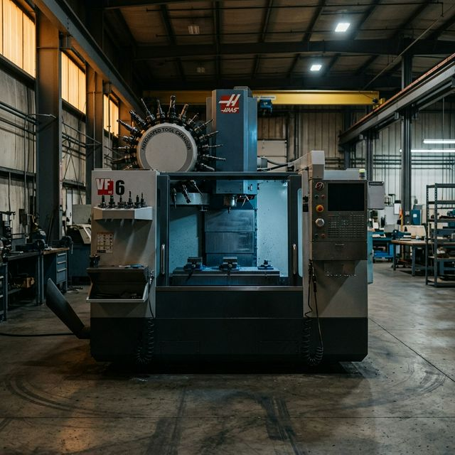

Disclaimer: This is a fictional market scenario designed to illustrate the structural dynamics of AI-brokered consortium assembly. The characters, companies, and events are invented. The market forces, the capability gaps, and the platform architecture are real.
In professional baseball, when a team trades a player “for future considerations,” neither side announces the terms. A trusted intermediary — the league’s transaction system — records the obligation and ensures both parties honour the agreement without requiring public disclosure.
These models — confidential exchange, loaned capacity, deferred reciprocity — are exactly what Canadian manufacturing SMBs need and have no mechanism to access.
Consider a machining shop in Hamilton, Ontario. They have a five-axis CNC machining centre that runs one shift per day — eight hours. The machine is capable of twenty-four. Sixteen hours of precision machining capacity evaporates every day. The overhead continues — depreciation, lease payments, maintenance contracts, floor space — whether the machine runs or not.
Sixty kilometres away, in Kitchener, a robotics integrator has just won a contract to build custom end-of-arm tooling for an automotive assembly line. They need five-axis machining for the titanium components — six weeks of work — but they don’t have a five-axis machine. Buying one is a $400,000 capital commitment for a six-week need.
The Hamilton shop would take the work in a heartbeat. But they will never publicly advertise that they have surplus capacity. In manufacturing, admitting you have idle machines is like admitting you’re losing customers. The Kitchener integrator will never publicly announce that they can’t fill their own order. The opacity runs both directions: the buyer is as secretive as the seller.
Unlike the previous scenarios in this Part — where opacity was passive — both sides here are actively concealing. The market failure is strategic information withholding, and the intervention must be confidential intermediation.
1. Priya’s Surplus
Priya Anand is the operations director at Meridian Precision, a thirty-five-person manufacturer of precision-machined components in Hamilton, Ontario. The shop makes aerospace brackets, medical device housings, and hydraulic valve bodies — high-mix, low-volume work that requires tight tolerances and AS9100D-certified quality systems.
Eighteen months ago, Meridian lost their second-largest customer — a helicopter component program that moved to a lower-cost facility in Mexico. The work represented 30% of their machining capacity. Priya has been backfilling with smaller contracts, but the gap remains. Two of her three five-axis machining centres — Makino a61nx horizontal mills — run one shift instead of two. Her most experienced CNC operator, Tomasz, runs the second Makino until 3:30 PM, then goes home. The machine sits dark for sixteen hours.
Priya’s CFO has calculated the cost of that idle capacity: approximately $14,500 per month per machine in depreciation, maintenance, and allocated overhead. Two machines, eighteen months: $522,000 in carrying costs for capability that produced nothing. The Makinos are four years old, well within their productive life. Selling them would recover maybe 50% of their value and permanently reduce the shop’s capability — capacity she’ll need when (if) she wins a replacement program.
Priya doesn’t want to sell the machines. She wants to rent their off-shift hours to another manufacturer who needs five-axis capability but doesn’t have it — the way an airline leases gate space during off-peak hours, or a restaurant rents its kitchen to a ghost kitchen overnight.
But she can’t post on LinkedIn: “Meridian Precision has surplus five-axis capacity available — call for pricing!” Her remaining customers would read that as: “Meridian is struggling.” Her bank would read that as: “Meridian’s revenue declined enough to idle two machines.” Her competitors would read that as: “Meridian lost a major contract — let’s go after their remaining customers.”
The information is toxic if disclosed publicly. But the capacity is real, and the demand for it is real, and the only thing preventing the transaction is the absence of a confidential intermediary.
2. Jonas’s Gap
Jonas Tremblay is the co-founder of AxionTech, a twelve-person robotics integration company in Kitchener, Ontario. AxionTech designs and builds custom robotic work cells for automotive and food processing clients — complete systems including the robot, the end-of-arm tooling, the fixturing, the safety guarding, and the programming.
Jonas has just signed the biggest contract in AxionTech’s four-year history: a robotic deburring and polishing cell for an automotive transmission housing line. The contract is worth $480,000 and includes the design and fabrication of custom end-of-arm tooling — four titanium mandrels and a set of adaptive compliance fixtures that must hold ±0.025 mm over a complex contoured surface.
AxionTech’s core competence is systems integration and robot programming, not precision machining. Jonas doesn’t own a five-axis machine. The titanium mandrels require five-axis simultaneous machining, tight tolerances on contoured surfaces, and material expertise that Jonas’s shop doesn’t have.
He needs a contract machining partner for approximately six weeks of work: programming, setup, machining, and inspection of the four mandrels and the fixture set. He estimates forty to fifty machine hours of five-axis time, plus programming and inspection.
Jonas’s options are the same ones every capacity-constrained SMB faces: word of mouth (three calls, no viable match), contract manufacturing directories (seventeen shops to cold-call), or offshore (twelve time zones of risk on his first major contract). What he needs is a shop within driving distance that has five-axis capability, titanium experience, AS9100-level quality systems, and available capacity in the next two weeks — without broadcasting to his customer that he can’t make the parts himself.
3. What Neither Side Will Say Out Loud
Here is the impasse: Priya has exactly what Jonas needs, sixty kilometres away, with an experienced operator who could start next week. Jonas has exactly the kind of work Priya’s idle Makinos were built for — precision five-axis contouring on exotic materials.
But both sides are deliberately hiding. Priya refuses to advertise surplus capacity. Jonas refuses to advertise that he needs to outsource. The information that would create the match is precisely the information that both parties have the strongest incentive to withhold.
4. The Confidential Exchange
Now imagine that CME — Canadian Manufacturers & Exporters — has deployed a manufacturing capacity exchange on MarketForge infrastructure: a confidential, AI-mediated platform where manufacturers register their surplus capacity and their unmet needs, and the platform matches them — without either side disclosing anything publicly. The design principle is the baseball trade desk, not the stock exchange. Participants don’t list on an open marketplace. They confide in an intermediary.
1. Priya Registers Her Surplus
Priya logs into the CME capacity exchange through her company’s existing CME membership portal. The system asks her to describe what she has available — confidentially:
“I have two Makino a61nx five-axis horizontal machining centres available for second-shift or full-shift contract work. Both are four years old, maintained to Makino’s recommended schedule, calibrated within the last six months. Spindle hours: Machine 1 at 6,200 hours, Machine 2 at 5,800 hours. We hold AS9100D and ISO 13485 certifications. Tomasz Kowalski, our lead five-axis operator, has fifteen years of experience and is available for second-shift work. Materials experience: titanium (Ti-6Al-4V), Inconel 718, aerospace-grade aluminum (7075-T6, 6061-T6), 316L stainless steel. Tolerance capability: ±0.01 mm demonstrated on complex contoured surfaces. Available starting immediately.”
The platform extracts structured capability data:
- Equipment: Makino a61nx (×2), five-axis horizontal, HSK-A63 spindle, 14,000 RPM, 60-tool ATC
- Certifications: AS9100D, ISO 13485
- Materials: Ti-6Al-4V, Inconel 718, aluminium alloys, stainless steels
- Demonstrated tolerances: ±0.01 mm on contoured surfaces
- Operator: 15 years five-axis experience, available second shift
- Availability: Immediate, ongoing until otherwise updated
- Location: Hamilton, Ontario
Crucially, none of this is visible to anyone on the platform. Not to other manufacturers, not to potential buyers, not to CME staff. The data sits in a confidential matching layer accessible only to the AI matching engine. The platform’s privacy architecture is designed so that Priya’s information is used for matching calculations but never displayed, shared, or surfaced to any human until she explicitly authorizes disclosure to a specific, pre-qualified counterparty.
2. Jonas Registers His Need
Jonas describes his requirement:
“I need contract five-axis machining capacity for a robotics tooling project. Four titanium mandrels (Ti-6Al-4V) with complex contoured surfaces, tolerance ±0.025 mm. Plus a set of adaptive compliance fixtures in 7075-T6 aluminum. Estimated scope: 40–50 machine hours over six weeks. Need a shop with titanium experience, quality system compatible with automotive Tier 1 requirements, within a reasonable drive of Kitchener-Waterloo area. I can provide full 3D models and GD&T drawings. Programming can be done by the machining partner or by my in-house CAM team.”
Jonas’s data — his customer, his contract value, his timeline pressure — stays in the confidential layer. Until a match is confirmed, no machining shop knows that AxionTech is looking for capacity.
3. The Match Behind Closed Doors
The matching engine evaluates Jonas’s requirements against every registered capacity profile. The match against Priya’s Makinos is structural: machine capability, documented titanium experience at tighter tolerances than Jonas requires, AS9100D certification, an experienced operator available for second shift, sixty-five kilometres apart, and immediate availability.
But the platform doesn’t send both parties each other’s names. It initiates a structured disclosure protocol: anonymous match notifications describing capability, not identity. Priya sees a robotics integrator needing 40–50 hours of five-axis titanium machining — scope that fits her idle second shift without affecting primary production. Jonas sees a Hamilton facility with documented Ti-6Al-4V experience exceeding his tolerance requirements. Neither party knows the other’s name, company, or specific circumstances.
Only after mutual opt-in and a technical scope exchange — Jonas uploading 3D models into a secure data room, Priya’s operator confirming machinability — does the platform reveal identities.
4. What the Platform Knows
When CME configured the capacity exchange, they populated the Knowledge Slot with domain-specific reference material:
- Contract machining rate benchmarks: anonymized pricing data for five-axis machining by material, complexity, and region — so neither party negotiates blind. The platform suggests that comparable Ti-6Al-4V work in Ontario typically runs $185–$280 per machine hour.
- Non-compete and disclosure boundaries: template provisions governing what each party can disclose — designed so Priya can record revenue without identifying her customer, and Jonas can report domestic content compliance without naming his supplier.
5. The Deal That Works Like a Loan
The deal is not a traditional purchase order. It is closer to the soccer loan than the commodity transaction. Meridian provides forty-five hours of second-shift five-axis machining with Tomasz operating. AxionTech provides 3D models, drawings, and raw material. Total cost: approximately $11,400. Priya’s net contribution to overhead after operator and tooling costs: $7,200 — meaningful against the machine’s $14,500/month carrying cost. For Jonas, precision titanium machining sixty kilometres away at a fraction of a new-machine purchase makes the decision trivial.
The engagement contract includes a future capacity reciprocity provision — not a binding obligation, but a registered preference. If either company needs the other’s capability in the future, they get priority matching. Over time, the relationship evolves from anonymous counterparties into a manufacturing alliance — two complementary companies leaning on each other’s strengths without merging, without joint ventures, without the overhead of a formal partnership.
6. What Makes This the Hardest Thin Market
The four scenarios in Part IV form a progression. The used machinery story was about passive opacity — neither side knew the other existed. The fractional testing story was about fractured discovery — supply existed in institutions that didn’t market it. The fractional skills story was about skill invisibility — talent existed but wasn’t listed anywhere. The capacity exchange is structurally distinct: the market failure is active strategic concealment. Both sides are deliberately hiding. The platform must protect secrets, not merely reduce search friction — without confidentiality guarantees that both parties believe, this market cannot form at all.
Temporal perishability compounds the problem. Unlike used equipment under a tarp, manufacturing capacity expires every hour. An idle shift tonight is gone tomorrow.
Reciprocity as a market-thickening mechanism is unique to this scenario. Every successful capacity exchange increases the likelihood of the next one, because both parties now have a track record and a reciprocal interest. The platform’s institutional memory — tracking relationships, outcomes, and reciprocity signals — makes the market progressively thicker over time.
What makes a thin market tick? → · The MarketForge platform → · The Cosolvent open protocol →